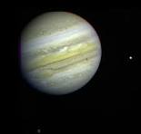

Jupiter is a gas giant .Jupiter has four moons .Like that one is europa.Jupiter's cold whirling clouds and stripes made up of ammonia and water floating around in the atmospere'are its distinctive features.it is known for its 'GREAT RED SPOT'.This is a huge storm that has swirling arount for 100 years on the planet's surface.Jupiter rings were discover in 1979 by NASA's voyager 1.
